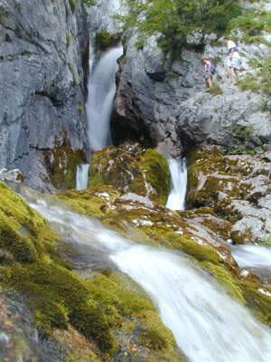

Slovenske reke in njihovi pritoki

SAVA
, 947 km
(v Sloveniji 221 km)
Sora
Ljubljanica
Savinja
Krka
DRAVA
, 707 km
(v Sloveniji 142 km)
Mislinja
Dravinja
Pesnica
SOČA
, 138 km
(v Sloveniji 96 km)
Idrijca
Vipava